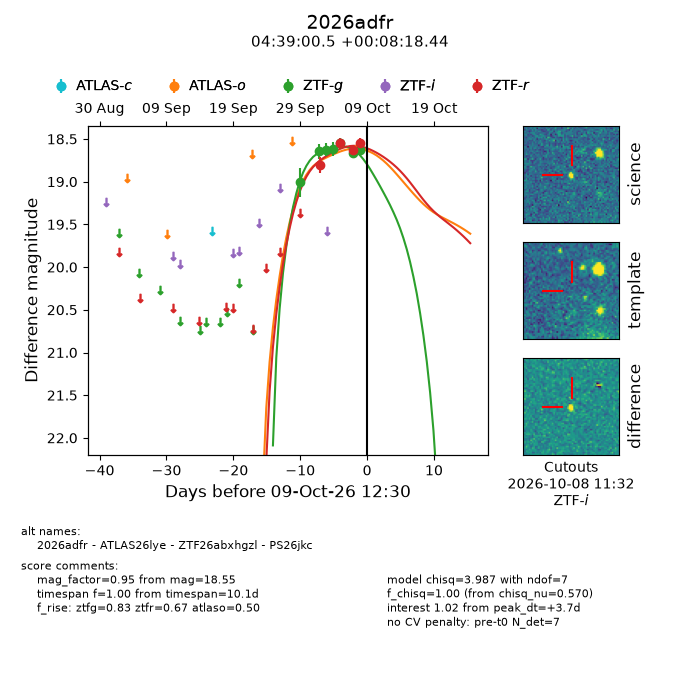
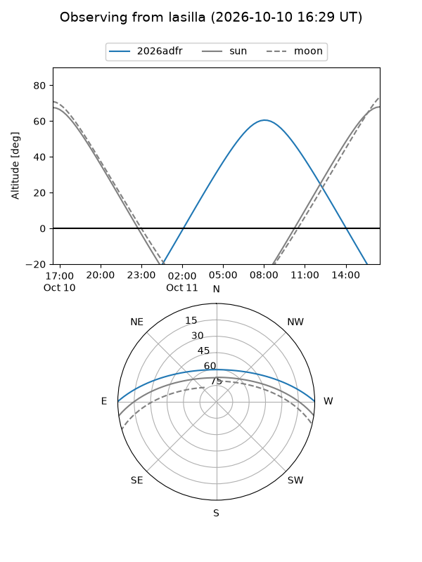
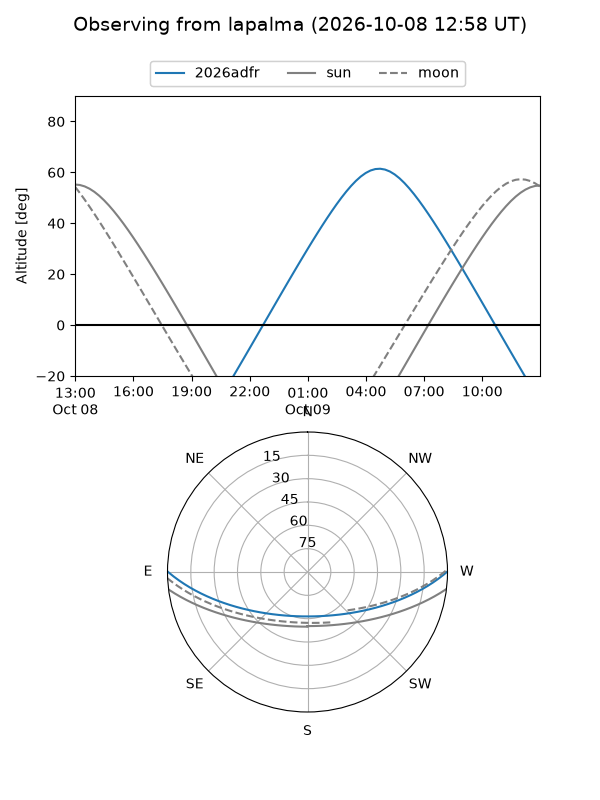
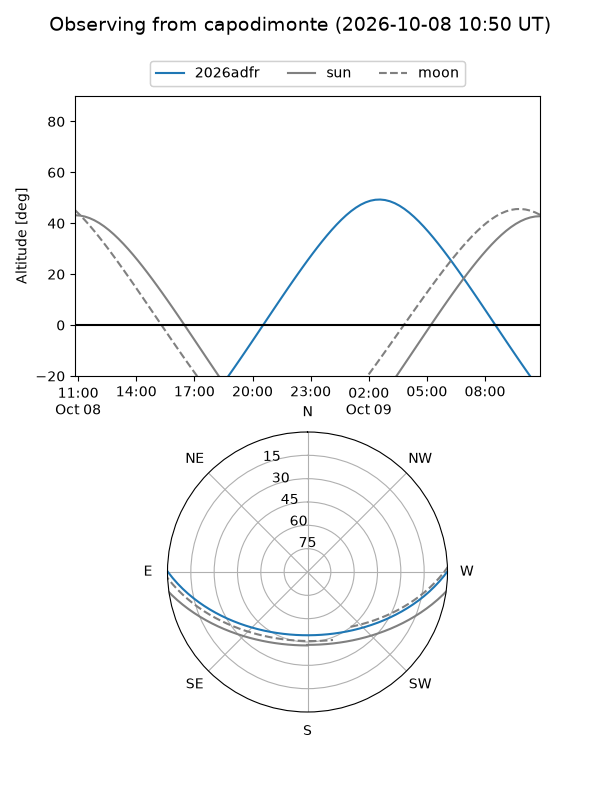
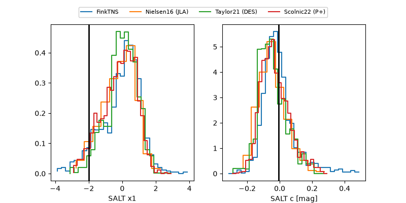

2026adfr
Target 2026adfr at 2026-10-09 12:32
Aliases and brokers:
FINK-ZTF: ztf.fink-portal.org/ZTF26abxhgzl
Lasair-ZTF: lasair-ztf.lsst.ac.uk/objects/ZTF26abxhgzl
ALeRCE-ZTF: alerce.online/object/ZTF26abxhgzl
YSE-PZ: ziggy.ucolick.org/yse/transient_detail/2026adfr
TNS name: wis-tns.org/object/2026adfr
Direct TNS query: direct search
alt names
ZTF26abxhgzl (ztf,fink_ztf)
2026adfr (tns,yse)
ATLAS26lye (atlas)
PS26jkc (panstarrs)
Coordinates:
equatorial (ra, dec) = 69.7520,+0.13846
equatorial (HMS+DMS) = 04:39:00.49,+00:08:18.44
galactic (l, b) = (196.2377,-29.01364)
Flags:
peak dt: +3.7
Photometry:
last atlaso=18.62, ztfg=18.63, ztfr=18.55
1 atlaso, 7 ztfg, 4 ztfr detections
Lightcurve

Visibility



Additional plots
